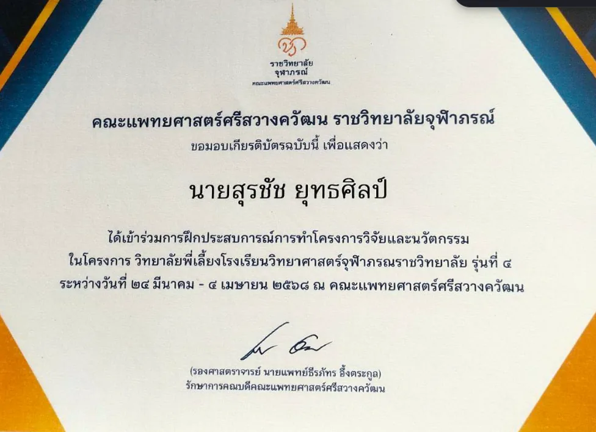
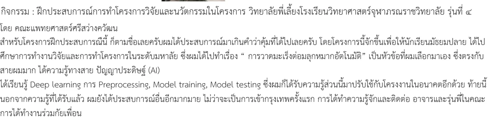

PROJECT 05 / RESEARCH EXPERIENCE
Prostate Cancer Auto-segmentation
ฝึกทำโครงการวิจัย ณ คณะแพทยศาสตร์ศรีสวางควัฒน
- ROLE
- RESEARCH TRAINEE
- STATUS
- COMPLETED
- YEAR
- 2025
- FIELD
- RESEARCH EXPERIENCE

ประสบการณ์ฝึกวิจัยที่เลือกหัวข้อการวาดขอบเขตมะเร็งต่อมลูกหมากอัตโนมัติ และลงมือกับ preprocessing, model training และ model testing
โครงการนี้เป็นการศึกษา/ต้นแบบและไม่ได้ใช้เพื่อวินิจฉัยโรค การตัดสินใจทางการแพทย์ต้องอยู่กับบุคลากรที่มีคุณสมบัติเหมาะสม
CONTEXT / PROBLEM
ปัญหาที่เลือกทำ
การ segmentation ภาพทางการแพทย์ต้องจัดการทั้งความแตกต่างของข้อมูล ขอบเขตที่ไม่ชัด และการประเมินผลที่ไม่ควรดูเพียงความแม่นยำรวม ประสบการณ์นี้ทำให้เห็นความต่างระหว่าง demo AI กับกระบวนการวิจัย
OWNERSHIP / CONTRIBUTION
ส่วนที่ผมรับผิดชอบ
ผู้เข้าร่วมฝึกวิจัย เลือกหัวข้อ ศึกษากระบวนการ และทดลอง Deep Learning ภายใต้การพี่เลี้ยง
- 01เลือกหัวข้อ prostate cancer auto-segmentation ตามความสนใจด้าน Medical AI
- 02ฝึกเตรียมข้อมูลและ preprocessing
- 03ทดลอง model training และ model testing
- 04เรียนรู้การตั้งคำถามและรายงานข้อจำกัดของการทดลอง
SYSTEM / PROCESS
ระบบและกระบวนการ
- 01QUESTION
กำหนดคำถามเกี่ยวกับการวาดขอบเขตบริเวณที่สนใจโดยอัตโนมัติ
- 02PREPROCESS
เตรียมข้อมูลให้พร้อมสำหรับการทดลอง
- 03TRAIN
ฝึกโมเดลและติดตามพฤติกรรมระหว่างการทดลอง
- 04TEST
ทดสอบผลและทบทวนข้อจำกัดของแนวทาง
VALIDATION / WHAT THE EVIDENCE SAYS
สิ่งที่ยืนยันได้ในตอนนี้
มีเกียรติบัตรจากคณะแพทยศาสตร์ศรีสวางควัฒน ราชวิทยาลัยจุฬาภรณ์ สำหรับการเข้าร่วมโครงการวิทยาลัยพี่เลี้ยงโรงเรียนวิทยาศาสตร์จุฬาภรณราชวิทยาลัย รุ่นที่ 4
EVIDENCE TYPES
LIMITATIONS / NEXT QUESTIONS
ข้อจำกัดที่ไม่ซ่อน
- เป็นประสบการณ์ฝึกวิจัย ไม่ใช่งานวิจัยตีพิมพ์
- ไม่เผยแพร่ metric ที่ไม่มีบันทึกวิธีคำนวณรองรับ
- ผลการทดลองไม่ใช่เครื่องมือสำหรับใช้กับผู้ป่วยจริง
EVIDENCE / VISUAL RECORD
หลักฐานที่ใช้ตรวจสอบ
